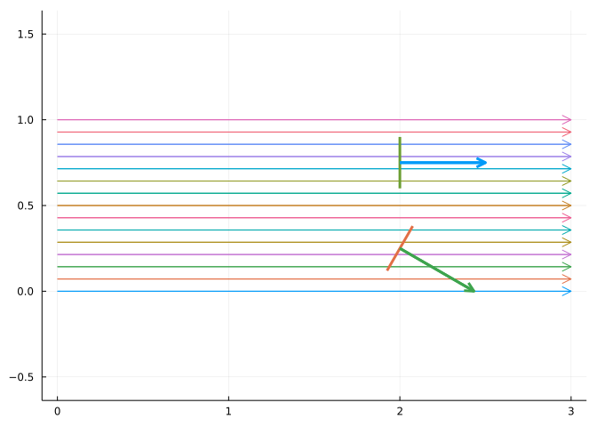
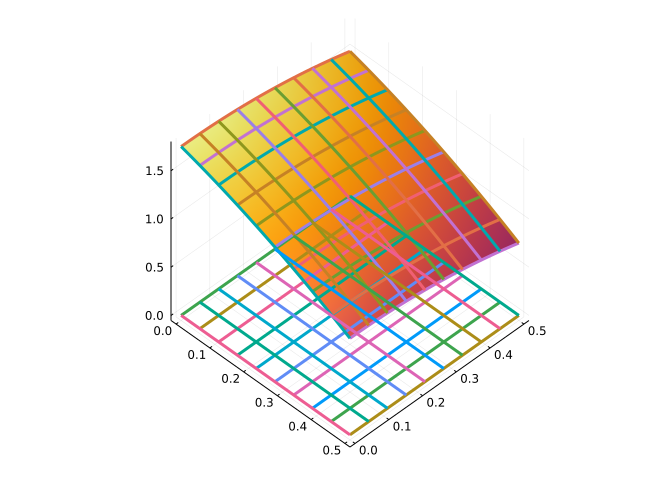
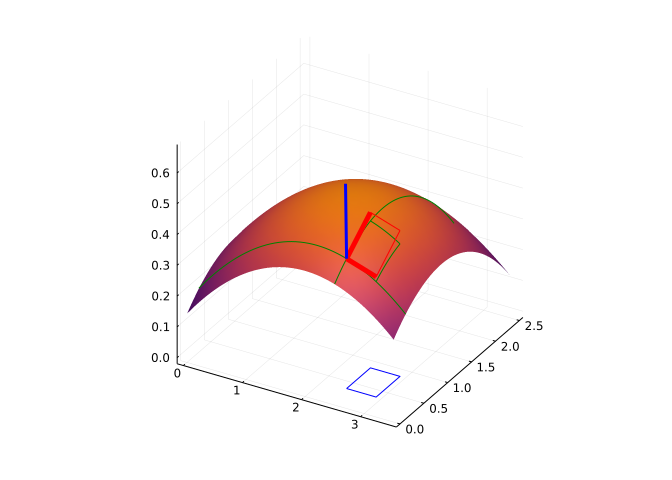

rho(x,y,z) = 5 - z
rho(v) = rho(v...)
r(t) = [cos(t), 0, sin(t)]
@syms t
rp = diff.(r(t),t) # r'
area = integrate((rho ∘ r)(t) * norm(rp), (t, 0, PI))
\[
-2 + 5 \pi
\]
This section uses these add-on packages:
using CalculusWithJulia
using Plots
using QuadGK
using SymPy
using HCubatureThis section discusses generalizations to the one- and two-dimensional definite integral. These two integrals integrate a function over a one or two dimensional region (e.g., \([a,b]\) or \([a,b]\times[c,d]\)). The generalization is to change this region to a one-dimensional piece of path in \(R^n\) or a two-dimensional surface in \(R^3\).
To fix notation, consider \(\int_a^b f(x)dx\) and \(\int_a^b\int_c^d g(x,y) dy dx\). In defining both, a Riemann sum is involved, these involve a partition of \([a,b]\) or \([a,b]\times[c,d]\) and terms like \(f(c_i) \Delta{x_i}\) and \(g(c_i, d_j) \Delta{x_i}\Delta{y_j}\). The \(\Delta\)s the diameter of an intervals \(I_i\) or \(J_j\). Consider now two parameterizations: \(\vec{r}(t)\) for \(t\) in \([a,b]\) and \(\Phi(u,v)\) for \((u,v)\) in \([a,b]\times[c,d]\). One is a parameterization of a space curve, \(\vec{r}:R\rightarrow R^n\); the other a parameterization of a surface, \(\Phi:R^2 \rightarrow R^3\). The image of \(I_i\) or \(I_i\times{J_j}\) under \(\vec{r}\) and \(\Phi\), respectively, will look almost linear if the intervals are small enough, so, at least on the microscopic level. A Riemann term can be based around this fact, provided it is understood how much the two parameterizations change the interval \(I_i\) or region \(I_i\times{J_j}\).
This chapter will quantify this change, describing it in terms of associated vectors to \(\vec{r}\) and \(\Phi\), yielding formulas for an integral of a scalar function along a path or over a surface. Furthermore, these integrals will be generalized to give meaning to physically useful interactions between the path or surface and a vector field.
In arc length a formula to give the arc-length of the graph of a univariate function or parameterized curve in \(2\) dimensions is given in terms of an integral. The intuitive approximation involved segments of the curve. To review, let \(\vec{r}(t)\), \(a \leq t \leq b\), describe a curve, \(C\), in \(R^n\), \(n \geq 2\). Partition \([a,b]\) into \(a=t_0 < t_1 < \cdots < t_{n-1} < t_n = b\).
Consider the path segment connecting \(\vec{r}(t_{i-1})\) to \(\vec{r}(t_i)\). If the partition of \([a,b]\) is microscopically small, this path will be approximated by \(\vec{r}(t_i) - \vec{r}(t_{i-1})\). This difference in turn is approximately \(\vec{r}'(t_i) (t_i - t_{i-1}) = \vec{r}'(t_i) \Delta{t}_i\), provided \(\vec{r}\) is differentiable.
If \(f:R^n \rightarrow R\) is a scalar function. Taking right-hand end points, we can consider the Riemann sum \(\sum (f\circ\vec{r})(t_i) \|\vec{r}'(t_i)\| \Delta{t}_i\). For integrable functions, this sum converges to the line integral defined as a one-dimensional integral for a given parameterization:
\[ \int_a^b f(\vec{r}(t)) \| \vec{r}'(t) \| dt. \]
The weight \(\| \vec{r}'(t) \|\) can be interpreted by how much the parameterization stretches (or contracts) an interval \([t_{i-1},t_i]\) when mapped to its corresponding path segment.
The curve \(C\) can be parameterized many different ways by introducing a function \(s(t)\) to change the time. If we use the arc-length parameterization with \(\gamma(0) = a\) and \(\gamma(l) = b\), where \(l\) is the arc-length of \(C\), then we have by change of variables \(t = \gamma(s)\) that
\[ \int_a^b f(\vec{r}(t)) \| \vec{r}'(t) \| dt = \int_0^l (f \circ \vec{r} \circ \gamma)(s) \| \frac{d\vec{r}}{dt}\mid_{t = \gamma(s)}\| \gamma'(s) ds. \]
But, by the chain rule:
\[ \frac{d(\vec{r} \circ\gamma)}{du}(s) = \frac{d\vec{r}}{dt}\mid_{t=\gamma(s)} \frac{d\gamma}{du}. \]
Since \(\gamma\) is increasing, \(\gamma' \geq 0\), so we get:
\[ \int_a^b f(\vec{r}(t)) \| \vec{r}'(t) \| dt = \int_0^l (f \circ \vec{r} \circ \gamma)(s) \|\frac{d(\vec{r}\circ\gamma)}{ds}\| ds = \int_0^l (f \circ \vec{r} \circ \gamma)(s) ds. \]
The last line, as the derivative is the unit tangent vector, \(T\), with norm \(1\).
This shows that the line integral is not dependent on the parameterization. The notation \(\int_C f ds\) is used to represent the line integral of a scalar function, the \(ds\) emphasizing an implicit parameterization of \(C\) by arc-length. When \(C\) is a closed curve, the \(\oint_C fds\) is used to indicate that.
When \(f\) is identically \(1\), the line integral returns the arc length. When \(f\) varies, then the line integral can be interpreted a few ways. First, if \(f \geq 0\) and we consider a sheet hung from the curve \(f\circ \vec{r}\) and cut to just touch the ground, the line integral gives the area of this sheet, in the same way an integral gives the area under a positive curve.
If the composition \(f \circ \vec{r}\) is viewed as a density of the arc (as though it were constructed out of some non-uniform material), then the line integral can be seen to return the mass of the arc.
Suppose \(\rho(x,y,z) = 5 - z\) gives the density of an arc where the arc is parameterized by \(\vec{r}(t) = \langle \cos(t), 0, \sin(t) \rangle\), \(0 \leq t \leq \pi\). (A half-circular arc.) Find the mass of the arc.
rho(x,y,z) = 5 - z
rho(v) = rho(v...)
r(t) = [cos(t), 0, sin(t)]
@syms t
rp = diff.(r(t),t) # r'
area = integrate((rho ∘ r)(t) * norm(rp), (t, 0, PI))Continuing, we could find the center of mass by integrating \(\int_C z (f\circ \vec{r}) \|r'\| dt\):
Mz = integrate(r(t)[3] * (rho ∘ r)(t) * norm(rp), (t, 0, PI))
MzFinally, we get the center of mass by
Mz / areaLet \(f(x,y,z) = x\sin(y)\cos(z)\) and \(C\) the path described by \(\vec{r}(t) = \langle t, t^2, t^3\rangle\) for \(0 \leq t \leq \pi\). Find the line integral \(\int_C fds\).
We find the numeric value with:
f(x,y,z) = x*sin(y)*cos(z)
f(v) = f(v...)
r(t) = [t, t^2, t^3]
integrand(t) = (f ∘ r)(t) * norm(r'(t))
quadgk(integrand, 0, pi)(-1.2230621144956229, 1.783298175794812e-8)Imagine the \(z\) axis is a wire and in the \(x\)-\(y\) plane the unit circle is a path. If there is a magnetic field, \(B\), then the field will induce a current to flow along the wire. [Ampere’s]https://tinyurl.com/y4gl9pgu) circuital law states \(\oint_C B\cdot\hat{T} ds = \mu_0 I\), where \(\mu_0\) is a constant and \(I\) the current. If the magnetic field is given by \(B=(x^2+y^2)^{1/2}\langle -y,x,0\rangle\) compute \(I\) in terms of \(\mu_0\).
We have the path is parameterized by \(\vec{r}(t) = \langle \cos(t), \sin(t), 0\rangle\), and so \(\hat{T} = \langle -\sin(t), \cos(t), 0\rangle\) and the integrand, \(B\cdot\hat{T}\) is
\[ (x^2 + y^2)^{-1/2}\langle -\sin(t), \cos(t), 0\rangle\cdot \langle -\sin(t), \cos(t), 0\rangle = (x^2 + y^2)(-1/2), \]
which is \(1\) on the path \(C\). So \(\int_C B\cdot\hat{T} ds = \int_C ds = 2\pi\). So the current satisfies \(2\pi = \mu_0 I\), so \(I = (2\pi)/\mu_0\).
(Ampere’s law is more typically used to find \(B\) from an current, then \(I\) from \(B\), for special circumstances. The Biot-Savart does this more generally.)
As defined above, the line integral is defined for a scalar function, but this can be generalized. If \(F:R^n \rightarrow R^n\) is a vector field, then each component is a scalar function, so the integral \(\int (F\circ\vec{r}) \|\vec{r}'\| dt\) can be defined component by component to yield a vector.
However, it proves more interesting to define an integral incorporating how properties of the path interact with the vector field. The key is \(\vec{r}'(t) dt = \hat{T} \| \vec{r}'(t)\|dt\) describes both the magnitude of how the parameterization stretches an interval but also a direction the path is taking. This direction allows interaction with the vector field.
The canonical example is work, which is a measure of a force times a distance. For an object following a path, the work done is still a force times a distance, but only that force in the direction of the motion is considered. (The constraint force keeping the object on the path does no work.) Mathematically, \(\hat{T}\) describes the direction of motion along a path, so the work done in moving an object over a small segment of the path is \((F\cdot\hat{T}) \Delta{s}\). Adding up incremental amounts of work leads to a Riemann sum for a line integral involving a vector field.
The work done in moving an object along a path \(C\) by a force field, \(F\), is given by the integral
\[ \int_C (F \cdot \hat{T}) ds = \int_C F\cdot d\vec{r} = \int_a^b ((F\circ\vec{r}) \cdot \frac{d\vec{r}}{dt})(t) dt. \]
In the \(n=2\) case, there is another useful interpretation of the line integral. In this dimension the normal vector, \(\hat{N}\), is well defined in terms of the tangent vector, \(\hat{T}\), through a rotation: \(\langle a,b\rangle^t = \langle b,-a\rangle^t\). (The negative, \(\langle -b,a\rangle\) is also a candidate, the difference in this choice would lead to a sign difference in in the answer.) This allows the definition of a different line integral, called a flow integral, as detailed later:
The flow across a curve \(C\) is given by
\[ \int_C (F\cdot\hat{N}) ds = \int_a^b (F \circ \vec{r})(t) \cdot (\vec{r}'(t))^t dt. \]
Let \(F(x,y,z) = \langle x - y, x^2 - y^2, x^2 - z^2 \rangle\) and \(\vec{r}(t) = \langle t, t^2, t^3 \rangle\). Find the work required to move an object along the curve described by \(\vec{r}\) between \(0\) and \(1\).
F(x,y,z) = [x-y, x^2 - y^2, x^2 - z^2]
F(v) = F(v...)
r(t) = [t, t^2, t^3]
@syms t::real
integrate((F ∘ r)(t) ⋅ diff.(r(t), t), (t, 0, 1))Let \(C\) be a closed curve. For a closed curve, the work integral is also termed the circulation. For the vector field \(F(x,y) = \langle -y, x\rangle\) compute the circulation around the triangle with vertices \((-1,0)\), \((1,0)\), and \((0,1)\).
We have three integrals using \(\vec{r}_1(t) = \langle -1+2t, 0\rangle\), \(\vec{r}_2(t) = \langle 1-t, t\rangle\) and \(\vec{r}_3(t) = \langle -t, 1-t \rangle\), all from \(0\) to \(1\). (Check that the parameterization is counter clockwise.)
The circulation then is:
r1(t) = [-1 + 2t, 0]
r2(t) = [1-t, t]
r3(t) = [-t, 1-t]
F(x,y) = [-y, x]
F(v) = F(v...)
integrand(r) = t -> (F ∘ r)(t) ⋅ r'(t)
C1 = quadgk(integrand(r1), 0, 1)[1]
C2 = quadgk(integrand(r2), 0, 1)[1]
C3 = quadgk(integrand(r3), 0, 1)[1]
C1 + C2 + C32.0That this is non-zero reflects a feature of the vector field. In this case, the vector field spirals around the origin, and the circulation is non zero.
Let \(F\) be the force of gravity exerted by a mass \(M\) on a mass \(m\) a distance \(\vec{r}\) away, that is \(F(\vec{r}) = -(GMm/\|\vec{r}\|^2)\hat{r}\).
Let \(\vec{r}(t) = \langle 1-t, 0, t\rangle\), \(0 \leq t \leq 1\). For concreteness, we take \(G M m\) to be \(10\). Then the work to move the mass is given by:
uvec(v) = v/norm(v) # unit vector
GMm = 10
Fₘ(r) = - GMm /norm(r)^2 * uvec(r)
rₘ(t) = [1-t, 0, t]
quadgk(t -> (Fₘ ∘ rₘ)(t) ⋅ rₘ'(t), 0, 1)(0.0, 0.0)Hmm, a value of \(0\). That’s a bit surprising at first glance. Maybe it had something to do with the specific path chosen. To investigate, we connect the start and endpoints with a circular arc, instead of a straight line:
rₒ(t) = [cos(t), 0, sin(t)]
quadgk(t -> (Fₘ ∘ rₒ)(t) ⋅ rₒ'(t), 0, 1)(-1.2493163125924272e-17, 2.7429251495998208e-17)Still \(0\). We will see next that this is not surprising if something about \(F\) is known.
The Washington Post had an article by Richard Panek with the quote “Well, yes — depending on what we mean by ‘attraction.’ Two bodies of mass don’t actually exert some mysterious tugging on each other. Newton himself tried to avoid the word ‘attraction’ for this very reason. All (!) he was trying to do was find the math to describe the motions both down here on Earth and up there among the planets (of which Earth, thanks to Copernicus and Kepler and Galileo, was one).” The point being the formula above is a mathematical description of the force, but not an explanation of how the force actually is transferred.
Let \(f: R^n \rightarrow R\) be a scalar function. Its gradient, \(\nabla f\) is a vector field. For a scalar function, we have by the chain rule:
\[ \frac{d(f \circ \vec{r})}{dt} = \nabla{f}(\vec{r}(t)) \cdot \frac{d\vec{r}}{dt}. \]
If we integrate, we see:
\[ W = \int_a^b \nabla{f}(\vec{r}(t)) \cdot \frac{d\vec{r}}{dt} dt = \int_a^b \frac{d(f \circ \vec{r})}{dt} dt = (f\circ\vec{r})\mid_{t = a}^b = (f\circ\vec{r})(b) - (f\circ\vec{r})(a), \]
using the Fundamental Theorem of Calculus.
The main point above is that if the vector field is the gradient of a scalar field, then the work done depends only on the endpoints of the path and not the path itself.
Conservative vector field: If \(F\) is a vector field defined in an open region \(R\); \(A\) and \(B\) are points in \(R\) and if for any curve \(C\) in \(R\) connecting \(A\) to \(B\), the line integral of \(F \cdot \vec{T}\) over \(C\) depends only on the endpoint \(A\) and \(B\) and not the path, then the line integral is called path indenpendent and the field is called a conservative field.
The force of gravity is the gradient of a scalar field. As such, the two integrals above which yield \(0\) could have been computed more directly. The particular scalar field is \(f = -GMm/\|\vec{r}\|\), which goes by the name the gravitational potential function. As seen, \(f\) depends only on magnitude, and as the endpoints of the path in the example have the same distance to the origin, the work integral, \((f\circ\vec{r})(b) - (f\circ\vec{r})(a)\) will be \(0\).
Coulomb’s law states that the electrostatic force between two charged particles is proportional to the product of their charges and inversely proportional to square of the distance between the two particles. That is,
\[ F = k\frac{ q q_0}{\|\vec{r}\|^2}\frac{\vec{r}}{\|\vec{r}\|}. \]
This is similar to gravitational force and is a conservative force. We saw that a line integral for work in a conservative force depends only on the endpoints. Verify, that for a closed loop the work integral will yield \(0\).
Take as a closed loop the unit circle, parameterized by arc-length by \(\vec{r}(t) = \langle \cos(t), \sin(t)\rangle\). The unit tangent will be \(\hat{T} = \vec{r}'(t) = \langle -\sin(t), \cos(t) \rangle\). The work to move a particle of charge \(q_0\) about a partical of charge \(q\) at the origin around the unit circle would be computed through:
@syms k q q0 t
F(r) = k*q*q0 * r / norm(r)^3
r(t) = [cos(t), sin(t)]
T(r) = [-r[2], r[1]]
W = integrate(F(r(t)) ⋅ T(r(t)), (t, 0, 2PI))There are technical assumptions about curves and regions that are necessary for some statements to be made:
The fact that work in a potential field is path independent is a consequence of the Fundamental Theorem of Line Integrals:
Let \(U\) be an open subset of \(R^n\), \(f: U \rightarrow R\) a differentiable function and \(\vec{r}: R \rightarrow R^n\) a differentiable function such that the the path \(C = \vec{r}(t)\), \(a\leq t\leq b\) is contained in \(U\). Then
\[ \int_C \nabla{f} \cdot d\vec{r} = \int_a^b \nabla{f}(\vec{r}(t)) \cdot \vec{r}'(t) dt = f(\vec{r}(b)) - f(\vec{r}(a)). \]
That is, a line integral through a gradient field can be evaluated by evaluating the original scalar field at the endpoints of the curve. In other words, line integrals through gradient fields are conservative.
Are conservative fields gradient fields? The answer is yes.
Assume \(U\) is an open region in \(R^n\) and \(F\) is a continuous and conservative vector field in \(U\).
Let \(a\) in \(U\) be some fixed point. For \(\vec{x}\) in \(U\), define:
\[ \phi(\vec{x}) = \int_{\vec\gamma[a,\vec{x}]} F \cdot \frac{d\vec\gamma}{dt}dt, \]
where \(\vec\gamma\) is any differentiable path in \(U\) connecting \(a\) to \(\vec{x}\) (as a point in \(U\)). The function \(\phi\) is uniquely defined, as the integral only depends on the endpoints, not the choice of path.
It is shown that the directional derivative \(\nabla{\phi} \cdot \vec{v}\) is equal to \(F \cdot \vec{v}\) by showing
\[ \lim_{t \rightarrow 0}\frac{\phi(\vec{x} + t\vec{v}) - \phi(\vec{x})}{t} = \lim_{t \rightarrow 0} \frac{1}{t} \int_{\vec\gamma[\vec{x},\vec{x}+t\vec{v}]} F \cdot \frac{d\vec\gamma}{dt}dt = F(\vec{x}) \cdot \vec{v}. \]
This is so for all \(\vec{v}\), so in particular for the coordinate vectors. So \(\nabla\phi = F\).
Let \(Radial(x,y) = \langle x, y\rangle\). This is a conservative field. Show the work integral over the half circle in the upper half plane is the same as the work integral over the \(x\) axis connecting \(-1\) to \(1\).
We have:
Radial(x,y) = [x,y]
Radial(v) = Radial(v...)
r₁(t) = [-1 + t, 0]
quadgk(t -> Radial(r₁(t)) ⋅ r₁'(t), 0, 2)(0.0, 0.0)Compared to
r₂(t) = [-cos(t), sin(t)]
quadgk(t -> Radial(r₂(t)) ⋅ r₂'(t), 0, pi)(0.0, 0.0)Not all vector fields are conservative. How can a vector field in \(U\) be identified as conservative? For now, this would require either finding a scalar potential or showing all line integrals are path independent.
In dimension \(2\) there is an easy to check method assuming \(U\) is simply connected: If \(F=\langle F_x, F_y\rangle\) is continuously differentiable in an simply connected region and \(\partial{F_y}/\partial{x} - \partial{F_x}/\partial{y} = 0\) then \(F\) is conservative. A similarly statement is available in dimension \(3\). The reasoning behind this will come from the upcoming Green’s theorem.
The flow integral in the \(n=2\) case was
\[ \int_C (F\cdot\hat{N}) ds = \int_a^b (F \circ \vec{r})(t) \cdot (\vec{r}'(t))^{t} dt, \]
where \(\langle a,b\rangle^t = \langle b, -a\rangle\).
For a given section of \(C\), the vector field breaks down into a tangential and normal component. The tangential component moves along the curve and so doesn’t contribute to any flow across the curve, only the normal component will contribute. Hence the \(F\cdot\hat{N}\) integrand. The following figure indicates the flow of a vector field by horizontal lines, the closeness of the lines representing strength, though these are all evenly space. The two line segments have equal length, but the one captures more flow than the other, as its normal vector is more parallel to the flow lines:

The flow integral is typically computed for a closed (Jordan) curve, measuring the total flow out of a region. In this case, the integral is written \(\oint_C (F\cdot\hat{N})ds\).
For a Jordan curve, the positive orientation of the curve is such that the normal direction (proportional to \(\hat{T}'\)) points away from the bounded interior. For a non-closed path, the choice of parameterization will determine the normal and the integral for flow across a curve is dependent - up to its sign - on this choice.
The New York Times showed aerial photos to estimate the number of protest marchers in Hong Kong. This is a more precise way to estimate crowd size, but requires a drone or some such to take photos. If one is on the ground, the number of marchers could be estimated by finding the flow of marchers across a given width. In the Times article, we see “Protestors packed the width of Hennessy Road for more than 5 hours. If this road is 50 meters wide and the rate of the marchers is 3 kilometers per hour, estimate the number of marchers.
The basic idea is to compute the rate of flow across a part of the street and then multiply by time. For computational sake, say the marchers are on a grid of 1 meters (that is in a 40m wide street, there is room for 40 marchers at a time. In one minute, the marchers move 50 meters:
3000/6050.0This means the rate of marchers per minute is 40 * 50. If this is steady over 5 hours, this simple count gives:
40 * 50 * 5 * 60600000This is short of the estimate 2M marchers, but useful for a rough estimate. The point is from rates of flow, which can be calculated locally, amounts over bigger scales can be computed. The word “across” is used, as only the direction across the part of the street counts in the computation. Were the marchers in total unison and then told to take a step to the left and a step to the right, they would have motion, but since it wasn’t across the line in the road (rather along the line) there would be no contribution to the count. The dot product with the normal vector formalizes this.
Let a path \(C\) be parameterized by \(\vec{r}(t) = \langle \cos(t), 2\sin(t)\rangle\), \(0 \leq t \leq \pi/2\) and \(F(x,y) = \langle \cos(x), \sin(xy)\rangle\). Compute the flow across \(C\).
We have
r(t) = [cos(t), 2sin(t)]
F(x,y) = [cos(x), sin(x*y)]
F(v) = F(v...)
normal(a,b) = [b, -a]
G(t) = (F ∘ r)(t) ⋅ normal(r(t)...)
a, b = 0, pi/2
quadgk(G, a, b)[1]1.0894497472261733Example, let \(F(x,y) = \langle -y, x\rangle\) be a vector field. (It represents an rotational flow.) What is the flow across the unit circle?
@syms t::real
F(x,y) = [-y,x]
F(v) = F(v...)
r(t) = [cos(t),sin(t)]
T(t) = diff.(r(t), t)
normal(a,b) = [b,-a]
integrate((F ∘ r)(t) ⋅ normal(T(t)...) , (t, 0, 2PI))Let \(F(x,y) = \langle x,y\rangle\) be a vector field. (It represents a source.) What is the flow across the unit circle?
@syms t::real
F(x,y) = [x, y]
F(v) = F(v...)
r(t) = [cos(t),sin(t)]
T(t) = diff.(r(t), t)
normal(a,b) = [b,-a]
integrate((F ∘ r)(t) ⋅ normal(T(t)...) , (t, 0, 2PI))Let \(F(x,y) = \langle x, y\rangle / \| \langle x, y\rangle\|^3\):
F₁(x,y) = [x,y] / norm([x,y])^2
F₁(v) = F₁(v...)F₁ (generic function with 2 methods)Consider \(C\) to be the square with vertices at \((-1,-1)\), \((1,-1)\), \((1,1)\), and \((-1, 1)\). What is the flow across \(C\) for this vector field? The region has simple outward pointing unit normals, these being \(\pm\hat{i}\) and \(\pm\hat{j}\), the unit vectors in the \(x\) and \(y\) direction. The integral can be computed in 4 parts. The first (along the bottom):
@syms s::real
r(s) = [-1 + s, -1]
n = [0,-1]
A1 = integrate(F₁(r(s)) ⋅ n, (s, 0, 2))
#The other three sides are related as each parameterization and normal is similar:
r(s) = [1, -1 + s]
n = [1, 0]
A2 = integrate(F₁(r(s)) ⋅ n, (s, 0, 2))
r(s) = [1 - s, 1]
n = [0, 1]
A3 = integrate(F₁(r(s)) ⋅ n, (s, 0, 2))
r(s) = [-1, 1-s]
n = [-1, 0]
A4 = integrate(F₁(r(s)) ⋅ n, (s, 0, 2))
A1 + A2 + A3 + A4As could have been anticipated by symmetry, the answer is simply 4A1 or \(2\pi\). What likely is not anticipated, is that this integral will be the same as that found by integrating over the unit circle (an easier integral):
@syms t::real
r(t) = [cos(t), sin(t)]
N(t) = r(t)
integrate(F₁(r(t)) ⋅ N(t), (t, 0, 2PI))This equivalence is a consequence of the upcoming Green’s theorem, as the vector field satisfies a particular equation.

We next turn attention to a generalization of line integrals to surface integrals. Surfaces were described in one of three ways: directly through a function as \(z=f(x,y)\), as a level curve through \(f(x,y,z) = c\), and parameterized through a function \(\Phi: R^2 \rightarrow R^3\). The level curve description is locally a function description, and the function description leads to a parameterization (\(\Phi(u,v) = \langle u,v,f(u,v)\rangle\)) so we restrict to the parameterized case.
Consider the figure of the surface described by \(\Phi(u,v) = \langle u,v,f(u,v)\rangle\):

The partitioning of the \(u-v\) plane into a grid, lends itself to a partitioning of the surface. To compute the total surface area of the surface, it would be natural to begin by approximating the area of each cell of this partition and add. As with other sums, we would expect that as the cells got smaller in diameter, the sum would approach an integral, in this case an integral yielding the surface area.
Consider a single cell:

The figure shows that a cell on the grid in the \(u-v\) plane of area \(\Delta{u}\Delta{v}\) maps to a cell of the partition with surface area \(\Delta{S}\) which can be approximated by a part of the tangent plane described by two vectors \(\vec{v}_1 = \partial{\Phi}/\partial{u}\) and \(\vec{v}_2 = \partial{\Phi}/\partial{v}\). These two vectors have cross product which a) points in the direction of the normal vector, and b) has magnitude yielding the approximation \(\Delta{S} \approx \|\vec{v}_1 \times \vec{v}_2\|\Delta{u}\Delta{v}\).
If we were to integrate the function \(G(x,y, z)\) over the surface \(S\), then an approximating Riemann sum could be produced by \(G(c) \| \vec{v}_1 \times \vec{v}_2\| \Delta u \Delta v\), for some point \(c\) on the surface.
In the limit a definition of an integral over a surface \(S\) in \(R^3\) is found by a two-dimensional integral over \(R\) in \(R^2\):
\[ \int_S G(x,y,z) dS = \int_R G(\Phi(u,v)) \| \frac{\partial{\Phi}}{\partial{u}} \times \frac{\partial{\Phi}}{\partial{v}} \| du dv. \]
In the case that the surface is described by \(z = f(x,y)\), then the formula’s become \(\vec{v}_1 = \langle 1,0,\partial{f}/\partial{x}\rangle\) and \(\vec{v}_2 = \langle 0, 1, \partial{f}/\partial{y}\rangle\) with cross product \(\vec{v}_1\times\vec{v}_2 =\langle -\partial{f}/\partial{x}, -\partial{f}/\partial{y},1\rangle\).
The value \(\| \frac{\partial{\Phi}}{\partial{u}} \times \frac{\partial{\Phi}}{\partial{y}} \|\) is called the surface element. As seen, it is the scaling between a unit area in the \(u-v\) plane and the approximating area on the surface after the parameterization.
Let us see that the formula holds for some cases where the answer is known by other means.
The surface area of cone is a known quantity. In cylindrical coordinates, the cone may be described by \(z = a - br\), so the parameterization \((r, \theta) \rightarrow \langle r\cos(\theta), r\sin(\theta), a - br \rangle\) maps \(T = [0, a/b] \times [0, 2\pi]\) onto the surface (less the bottom).
The surface element is the cross product \(\langle \cos(\theta), \sin(\theta), -b\rangle\) and \(\langle -r\sin(\theta), r\cos(\theta), 0\rangle\), which is:
@syms 𝑹::postive θ::positive 𝒂::positive 𝒃::positive
𝒏 = [cos(θ), sin(θ), -𝒃] × [-𝑹*sin(θ), 𝑹*cos(θ), 0]
𝒔𝒆 = simplify(norm(𝒏))(To do this computationally, one might compute:
Phi(r, theta) = [r*cos(theta), r*sin(theta), 𝒂 - 𝒃*r]
Phi(𝑹, θ).jacobian([𝑹, θ])3×2 Matrix{Sym}:
cos(θ) -𝑹⋅sin(θ)
sin(θ) 𝑹⋅cos(θ)
-𝒃 0and from here pull out the two vectors to take a cross product.)
The surface area is then found by integrating \(G(\vec{x}) = 1\):
integrate(1 * 𝒔𝒆, (𝑹, 0, 𝒂/𝒃), (θ, 0, 2PI))A formula from a quick Google search is \(A = \pi r(r^2 + \sqrt{h^2 + r^2}\). Does this match up?
𝑹 = 𝒂/𝒃; 𝒉 = 𝒂
pi * 𝑹 * (𝑹 + sqrt(𝑹^2 + 𝒉^2)) |> simplifyNope, off by a summand of \(\pi(a/b)^2 = \pi r^2\), which may be recognized as the area of the base, which we did not compute, but which the Google search did. So yes, the formulas do agree.
The sphere has known surface area \(4\pi r^2\). Let’s see if we can compute this. With the parameterization from spherical coordinates \((\theta, \phi) \rightarrow \langle r\sin\phi\cos\theta, r\sin\phi\sin\theta,r\cos\phi\rangle\), we have approaching this numerically:
Rad = 1
Phi(theta, phi) = Rad * [sin(phi)*cos(theta), sin(phi)*sin(theta), cos(phi)]
Phi(v) = Phi(v...)
function surface_element(pt)
Jac = ForwardDiff.jacobian(Phi, pt)
v1, v2 = Jac[:,1], Jac[:,2]
norm(v1 × v2)
end
out = hcubature(surface_element, (0, 0), (2pi, 1pi))
out[1] - 4pi*Rad^2 # *basically* zero8.15347789284715e-13In Surface area the following formula for the surface area of a surface of revolution about the \(x\) axis is described by \(r=f(x)\) is given:
\[ \int_a^b 2\pi f(x) \cdot \sqrt{1 + f'(x)^2} dx. \]
Consider the transformation \((x, \theta) \rightarrow \langle x, f(x)\cos(\theta), f(x)\sin(\theta)\). This maps the region \([a,b] \times [0, 2\pi]\) onto the surface of revolution. As such, the surface element would be:
@syms 𝒇()::positive x::real theta::real
Phi(x, theta) = [x, 𝒇(x)*cos(theta), 𝒇(x)*sin(theta)]
Jac = Phi(x, theta).jacobian([x, theta])
v1, v2 = Jac[:,1], Jac[:,2]
se = norm(v1 × v2)
se .|> simplifyThis in agreement with the previous formula.
Consider the upper half sphere, \(S\). Compute \(\int_S z dS\).
Were the half sphere made of a thin uniform material, this would be computed to find the \(z\) direction of the centroid.
We use the spherical coordinates to parameterize:
\[ \Phi(\theta, \phi) = \langle \cos(\phi)\cos(\theta), \cos(\phi)\sin(\theta), \sin(\phi) \rangle \]
The Jacobian and surface element are computed and then the integral is performed:
@syms theta::real phi::real
Phi(theta, phi) = [cos(phi)*cos(theta), cos(phi)*sin(theta), sin(phi)]
Jac = Phi(theta,phi).jacobian([theta, phi])
v1, v2 = Jac[:,1], Jac[:,2]
SurfElement = norm(v1 × v2) |> simplify
z = sin(phi)
integrate(z * SurfElement, (theta, 0, 2PI), (phi, 0, PI/2))A smooth surface \(S\) is orientable if it possible to define a unit normal vector, \(\vec{N}\) that varies continuously with position. For example, a sphere has a normal vector that does this. On the other hand, a Mobius strip does not, as a normal when moved around the surface may necessarily be reversed as it returns to its starting point. For a closed, orientable smooth surface there are two possible choices for a normal, and convention chooses the one that points away from the contained region, such as the outward pointing normal for the sphere or torus.
Beyond finding surface area, surface integrals can also compute interesting physical phenomena. These are often associated to a vector field (in this case a function \(\vec{F}: R^3 \rightarrow R^3\)), and the typical case is the flux through a surface defined locally by \(\vec{F} \cdot \hat{N}\), that is the magnitude of the projection of the field onto the unit normal vector.
Consider the flow of water through an opening in a time period \(\Delta t\). The amount of water mass to flow through would be the area of the opening times the velocity of the flow perpendicular to the surface times the density times the time period; symbolically: \(dS \cdot ((\rho \vec{v}) \cdot \vec{N}) \cdot \Delta t\). Dividing by \(\Delta t\) gives a rate of flow as \(((\rho \vec{v}) \cdot \vec{N}) dS\). With \(F = \rho \vec{v}\), the flux integral can be seen as the rate of flow through a surface.
To find the normal for a surface element arising from a parameterization \(\Phi\), we have the two partial derivatives \(\vec{v}_1=\partial{\Phi}/\partial{u}\) and \(\vec{v}_2 = \partial{\Phi}/\partial{v}\), the two column vectors of the Jacobian matrix of \(\Phi(u,v)\). These describe the tangent plane, and even more their cross product will be a) normal to the tangent plane and b) have magnitude yielding the surface element of the transformation.
From this, for a given parameterization, \(\Phi(u,v):T \rightarrow S\), the following formula is suggested for orientable surfaces:
\[ \int_S \vec{F} \cdot \hat{N} dS = \int_T \vec{F}(\Phi(u,v)) \cdot (\frac{\partial{\Phi}}{\partial{u}} \times \frac{\partial{\Phi}}{\partial{v}}) du dv. \]
When the surface is described by a function, \(z=f(x,y)\), the parameterization is \((u,v) \rightarrow \langle u, v, f(u,v)\rangle\), and the two vectors are \(\vec{v}_1 = \langle 1, 0, \partial{f}/\partial{u}\rangle\) and \(\vec{v}_2 = \langle 0, 1, \partial{f}/\partial{v}\rangle\) and their cross product is \(\vec{v}_1\times\vec{v}_1=\langle -\partial{f}/\partial{u}, -\partial{f}/\partial{v}, 1\rangle\).
Suppose a vector field \(F(x,y,z) = \langle 0, y, -z \rangle\) is given. Let \(S\) be the surface of the paraboloid \(y = x^2 + z^2\) between \(y=0\) and \(y=4\). Compute the surface integral \(\int_S F\cdot \hat{N} dS\).
This is a surface of revolution about the \(y\) axis, so a parameterization is \(\Phi(y,\theta) = \langle \sqrt{y} \cos(\theta), y, \sqrt{y}\sin(\theta) \rangle\). The surface normal is given by:
@syms y::positive theta::positive
Phi(y,theta) = [sqrt(y)*cos(theta), y, sqrt(y)*sin(theta)]
Jac = Phi(y, theta).jacobian([y, theta])
v1, v2 = Jac[:,1], Jac[:,2]
Normal = v1 × v2
# With this, the surface integral becomes:
F(x,y,z) = [0, y, -z]
F(v) = F(v...)
integrate(F(Phi(y,theta)) ⋅ Normal, (theta, 0, 2PI), (y, 0, 4))Let \(S\) be the closed surface bounded by the cylinder \(x^2 + y^2 = 1\), the plane \(z=0\), and the plane \(z = 1+x\). Let \(F(x,y,z) = \langle 1, y, -z \rangle\). Compute \(\oint_S F\cdot\vec{N} dS\).
𝐅(x,y,z) = [1, y, z]
𝐅(v) = 𝐅(v...)𝐅 (generic function with 2 methods)The surface has three faces, with different outward pointing normals for each. Let \(S_1\) be the unit disk in the \(x-y\) plane with normal \(-\hat{k}\); \(S_2\) be the top part, with normal \(\langle \langle-1, 0, 1\rangle\) (as the plane is \(-1x + 0y + 1z = 1\)); and \(S_3\) be the cylindrical part with outward pointing normal \(\vec{r}\).
Integrating over \(S_1\), we have the parameterization \(\Phi(r,\theta) = \langle r\cos(\theta), r\sin(\theta), 0\rangle\):
@syms 𝐑::positive 𝐭heta::positive
𝐏hi₁(r,theta) = [r*cos(theta), r*sin(theta), 0]
𝐉ac₁ = 𝐏hi₁(𝐑, 𝐭heta).jacobian([𝐑, 𝐭heta])
𝐯₁, 𝐰₁ = 𝐉ac₁[:,1], 𝐉ac₁[:,2]
𝐍ormal₁ = 𝐯₁ × 𝐰₁ .|> simplify3-element Vector{Sym}:
0
0
𝐑A₁ = integrate(𝐅(𝐏hi₁(𝐑, 𝐭heta)) ⋅ (-𝐍ormal₁), (𝐭heta, 0, 2PI), (𝐑, 0, 1)) # use -Normal for outward pointingIntegrating over \(S_2\) we use the parameterization \(\Phi(r, \theta) = \langle r\cos(\theta), r\sin(\theta), 1 + r\cos(\theta)\rangle\).
𝐏hi₂(r, theta) = [r*cos(theta), r*sin(theta), 1 + r*cos(theta)]
𝐉ac₂ = 𝐏hi₂(𝐑, 𝐭heta).jacobian([𝐑, 𝐭heta])
𝐯₂, 𝐰₂ = 𝐉ac₂[:,1], 𝐉ac₂[:,2]
𝐍ormal₂ = 𝐯₂ × 𝐰₂ .|> simplify # has correct orientation3-element Vector{Sym}:
-𝐑
0
𝐑With this, the contribution for \(S_2\) is:
A₂ = integrate(𝐅(𝐏hi₂(𝐑, 𝐭heta)) ⋅ (𝐍ormal₂), (𝐭heta, 0, 2PI), (𝐑, 0, 1))Finally for \(S_3\), the parameterization used is \(\Phi(z, \theta) = \langle \cos(\theta), \sin(\theta), z\rangle\), but this is over a non-rectangular region, as \(z\) is between \(0\) and \(1 + x\).
This parameterization gives a normal computed through:
@syms 𝐳::positive
𝐏hi₃(z, theta) = [cos(theta), sin(theta), 𝐳]
𝐉ac₃ = 𝐏hi₃(𝐳, 𝐭heta).jacobian([𝐳, 𝐭heta])
𝐯₃, 𝐰₃ = 𝐉ac₃[:,1], 𝐉ac₃[:,2]
𝐍ormal₃ = 𝐯₃ × 𝐰₃ .|> simplify # wrong orientation, so we change sign below3-element Vector{Sym}:
-cos(𝐭heta)
-sin(𝐭heta)
0The contribution is
A₃ = integrate(𝐅(𝐏hi₃(𝐑, 𝐭heta)) ⋅ (-𝐍ormal₃), (𝐳, 0, 1 + cos(𝐭heta)), (𝐭heta, 0, 2PI))In total, the surface integral is
A₁ + A₂ + A₃Two point charges with charges \(q\) and \(q_0\) will exert an electrostatic force of attraction or repulsion according to Coulomb’s law. The Coulomb force is \(kqq_0\vec{r}/\|\vec{r}\|^3\). This force is proportional to the product of the charges, \(qq_0\), and inversely proportional to the square of the distance between them.
The electric field is a vector field is the field generated by the force on a test charge, and is given by \(E = kq\vec{r}/\|\vec{r}\|^3\).
Let \(S\) be the unit sphere \(\|\vec{r}\|^2 = 1\). Compute the surface integral of the electric field over the closed surface, \(S\).
We have (using \(\oint\) for a surface integral over a closed surface):
\[ \oint_S S \cdot \vec{N} dS = \oint_S \frac{kq}{\|\vec{r}\|^2} \hat{r} \cdot \hat{r} dS = \oint_S \frac{kq}{\|\vec{r}\|^2} dS = kqq_0 \cdot SA(S) = 4\pi k q \]
Now consider the electric field generated by a point charge within the unit sphere, but not at the origin. The integral now will not fall in place by symmetry considerations, so we will approach the problem numerically.
E(r) = (1/norm(r)^2) * uvec(r) # kq = 1
Phiₑ(theta, phi) = 1*[sin(phi)*cos(theta), sin(phi) * sin(theta), cos(phi)]
Phiₑ(r) = Phiₑ(r...)
normal(r) = Phiₑ(r)/norm(Phiₑ(r))
function SE(r)
Jac = ForwardDiff.jacobian(Phiₑ, r)
v1, v2 = Jac[:,1], Jac[:,2]
v1 × v2
end
a = rand() * Phiₑ(2pi*rand(), pi*rand())
A1 = hcubature(r -> E(Phiₑ(r)-a) ⋅ normal(r) * norm(SE(r)), (0.0,0.0), (2pi, 1pi))
A1[1]12.566370613450168The answer is \(4\pi\), regardless of the choice of a, as long as it is inside the surface. (We see above, some fussiness in the limits of integration. HCubature does some conversion of the limits, but does not currently do well with mixed types, so in the above only floating point values are used.)
When a is outside the surface, the answer is always a constant:
a = 2 * Phiₑ(2pi*rand(), pi*rand()) # random point with radius 2
A1 = hcubature(r -> E(Phiₑ(r)-a) ⋅ normal(r) * norm(SE(r)), (0.0,0.0), (2pi, pi/2))
A2 = hcubature(r -> E(Phiₑ(r)-a) ⋅ normal(r) * norm(SE(r)), (0.0,pi/2), (2pi, 1pi))
A1[1] + A2[1]-1.3888223904245933e-11That constant being \(0\).
This is a consequence of Gauss’s law, which states that for an electric field \(E\), the electric flux through a closed surface is proportional to the total charge contained. (Gauss’s law is related to the upcoming divergence theorem.) When a is inside the surface, the total charge is the same regardless of exactly where, so the integral’s value is always the same. When a is outside the surface, the total charge inside the sphere is \(0\), so the flux integral is as well.
Gauss’s law is typically used to identify the electric field by choosing a judicious surface where the surface integral can be computed. For example, suppose a ball of radius \(R_0\) has a uniform charge. What is the electric field generated? Assuming it is dependent only on the distance from the center of the charged ball, we can, first, take a sphere of radius \(R > R_0\) and note that \(E(\vec{r})\cdot\hat{N}(r) = \|E(R)\|\), the magnitude a distance \(R\) away. So the surface integral is simply \(\|E(R)\|4\pi R^2\) and by Gauss’s law a constant depending on the total charge. So \(\|E(R)\| ~ 1/R^2\). When \(R < R_0\), the same applies, but the total charge within the surface will be like \((R/R_0 )^3\), so the result will be linear in \(R\), as:
\[ 4 \pi \|E(R)\| R^2 = k 4\pi \left(\frac{R}{R_0}\right)^3. \]
Let \(\vec{r}(t) = \langle e^t\cos(t), e^{-t}\sin(t) \rangle\).
What is \(\|\vec{r}'(1/2)\|\)?
What is the \(x\) (first) component of \(\hat{N}(t) = \hat{T}'(t)/\|\hat{T}'(t)\|\) at \(t=1/2\)?
Let \(\Phi(u,v) = \langle u,v,u^2+v^2\rangle\) parameterize a surface. Find the magnitude of \(\| \partial{\Phi}/\partial{u} \times \partial{\Phi}/\partial{v} \|\) at \(u=1\) and \(v=2\).
For a plane \(ax+by+cz=d\) find the unit normal.
Does it depend on \(d\)?
Let \(\vec{r}(t) = \langle \cos(t), \sin(t), t\rangle\) and let \(F(x,y,z) = \langle -y, x, z\rangle\)
Numerically compute \(\int_0^{2\pi} F(\vec{r}(t)) \cdot \vec{r}'(t) dt\).
Compute the value symbolically:
Let \(F(x,y) = \langle 2x^3y^2, xy^4 + 1\rangle\). What is the work done in integrating \(F\) along the parabola \(y=x^2\) between \((-1,1)\) and \((1,1)\)? Give a numeric answer:
Let \(F = \nabla{f}\) where \(f:R^2 \rightarrow R\). The level curves of \(f\) are curves in the \(x-y\) plane where \(f(x,y)=c\), for some constant \(c\). Suppose \(\vec{r}(t)\) describes a path on the level curve of \(f\). What is the value of \(\int_C F \cdot d\vec{r}\)?
Let \(F(x,y) = (x^2+y^2)^{-k/2} \langle x, y \rangle\) be a radial field. The work integral around the unit circle simplifies:
\[ \int_C F\cdot \frac{dr}{dt} dt = \int_0^{2pi} \langle (1)^{-k/2} \cos(t), \sin(t) \rangle \cdot \langle-\sin(t), \cos(t)\rangle dt. \]
For any \(k\), this integral will be:
Let \(f(x,y) = \tan^{-1}(y/x)\). We will integrate \(\nabla{f}\) over the unit circle. The integrand wil be:
@syms t::real x::real y::real
f(x,y) = atan(y/x)
r(t) = [cos(t), sin(t)]
∇f = subs.(∇(f(x,y)), x .=> r(t)[1], y .=> r(t)[2]) .|> simplify
drdt = diff.(r(t), t)
∇f ⋅ drdt |> simplifySo \(\int_C \nabla{f}\cdot d\vec{r} = \int_0^{2\pi} \nabla{f}\cdot d\vec{r}/dt dt = 2\pi\).
Why is this surprising?
The function \(F = \nabla{f}\) is
Let \(F(x,y) = \langle F_x, F_y\rangle = \langle 2x^3y^2, xy^4 + 1\rangle\). Compute
\[ \frac{\partial{F_y}}{\partial{x}}- \frac{\partial{F_x}}{\partial{y}}. \]
Is this \(0\)?
Let \(F(x,y) = \langle F_x, F_y\rangle = \langle 2x^3, y^4 + 1\rangle\). Compute
\[ \frac{\partial{F_y}}{\partial{x}} - \frac{\partial{F_x}}{\partial{y}}. \]
Is this \(0\)?
It is not unusual to see a line integral, \(\int F\cdot d\vec{r}\), where \(F=\langle M, N \rangle\) expressed as \(\int Mdx + Ndy\). This uses the notation for a differential form, so is familiar in some theoretical usages, but does not readily lend itself to computation. It does yield pleasing formulas, such as \(\oint_C x dy\) to give the area of a two-dimensional region, \(D\), in terms of a line integral around its perimeter. To see that this is so, let \(\vec{r}(t) = \langle a\cos(t), b\sin(t)\rangle\), \(0 \leq t \leq 2\pi\). This parameterizes an ellipse. Let \(F(x,y) = \langle 0,x\rangle\). What does \(\oint_C xdy\) become when translated into \(\int_a^b (F\circ\vec{r})\cdot\vec{r}' dt\)?
Let a surface be parameterized by \(\Phi(u,v) = \langle u\cos(v), u\sin(v), u\rangle\).
Compute \(\vec{v}_1 = \partial{\Phi}/\partial{u}\)
Compute \(\vec{v}_2 = \partial{\Phi}/\partial{u}\)
Compute \(\vec{v}_1 \times \vec{v}_2\)
For the surface parameterized by \(\Phi(u,v) = \langle uv, u^2v, uv^2\rangle\) for \((u,v)\) in \([0,1]\times[0,1]\), numerically find the surface area.
For the surface parameterized by \(\Phi(u,v) = \langle uv, u^2v, uv^2\rangle\) for \((u,v)\) in \([0,1]\times[0,1]\) and vector field \(F(x,y,z) =\langle y^2, x, z\langle\), numerically find \(\iint_S (F\cdot\hat{N}) dS\).
Let \(F=\langle 0,0,1\rangle\) and \(S\) be the upper-half unit sphere, parameterized by \(\Phi(\theta, \phi) = \langle \sin(\phi)\cos(\theta), \sin(\phi)\sin(\theta), \cos(\phi)\rangle\). Compute \(\iint_S (F\cdot\hat{N}) dS\) numerically. Choose the normal direction so that the answer is postive.
Let \(\phi(x,y,z) = xy\) and \(S\) be the triangle \(x+y+z=1\), \(x,y,z \geq 0\). The surface may be described by \(z=f(x,y) = 1 - (x + y)\), \(0\leq y \leq 1-x, 0 \leq x \leq 1\) is useful in describing the surface. With this, the following integral will compute \(\int_S \phi dS\):
\[ \int_0^1 \int_0^{1-x} xy \sqrt{1 + \left(\frac{\partial{f}}{\partial{x}}\right)^2 + \left(\frac{\partial{f}}{\partial{y}}\right)^2} dy dx. \]
Compute this.
Let \(\Phi(u,v) = \langle u^2, uv, v^2\rangle\), \((u,v)\) in \([0,1]\times[0,1]\) and \(F(x,y,z) = \langle x,y^2,z^3\rangle\). Find \(\int_S (F\cdot\hat{N})dS\)